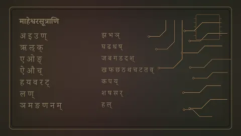
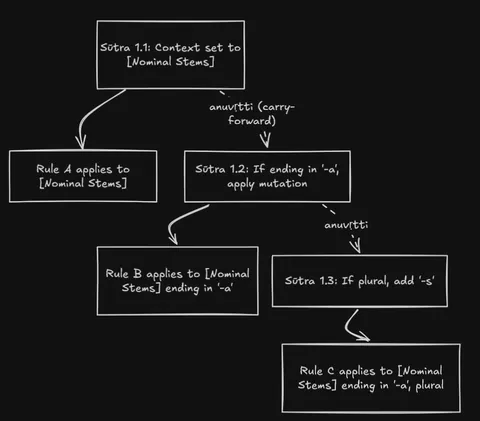
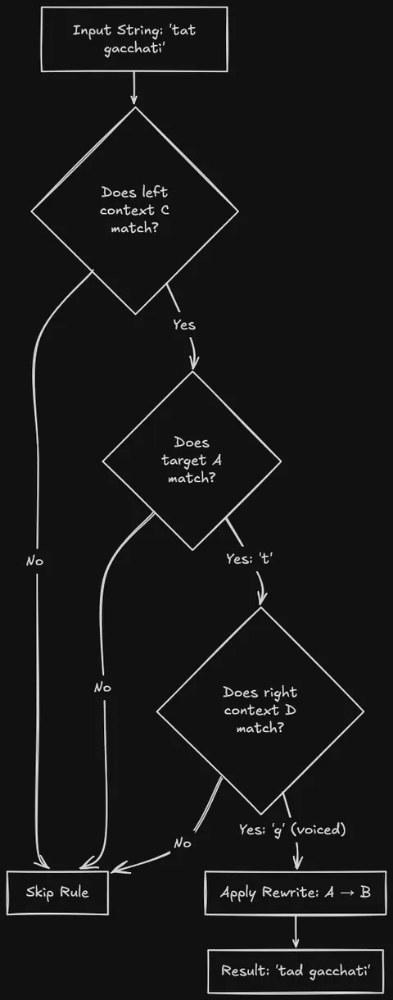
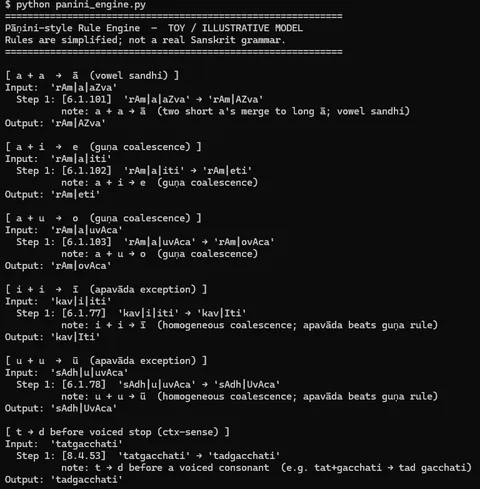

Part 2 of 6
The Grammar That Runs Like a Program
By Sukalyan RoyPublished Updated 11 min read

TL;DR #
-
Pāṇini's Aṣṭādhyāyī (c. 350 BCE) is a formal, generative specification of Sanskrit, using structures strikingly similar to modern compilers.
-
It employs character classes, rule ordering, context-sensitivity, and conflict-resolution hierarchies.
-
While generative in a formal sense, it requires human cognition to execute, unlike a mechanical compiler.
-
Recent research by Rishi Rajpopat (2022) resolved a centuries-old rule conflict issue, proving the grammar's internal consistency.
-
A toy Python implementation of the rule engine is provided in the repository.
-
Caveat: My linguistic knowledge is limited. I have a CS background and a passing interest in Sanskrit, but I am not a trained linguist. Corrections and clarifications are welcome.
Project status: The
code/panini_engine.pyscript is a minimal rewrite-rule engine demonstrating structural ideas like rule ordering and context-sensitivity. It handles simplified sandhi rules successfully. It is an educational toy, not a full implementation of the Aṣṭādhyāyī.
The first time I read a technical description of how the Aṣṭādhyāyī works, I had to stop and reread it twice. It read, almost word for word, like a description of a compiler with Context-sensitive rules, a metalanguage for describing the object language, Ordered rule application, and a conflict-resolution hierarchy.
Sometime around 350 BCE, in the Gandhara region of what is now northern Pakistan, a grammarian named Pāṇini compiled a complete formal description of Sanskrit. He called it the Aṣṭādhyāyī, or "Eight Chapters." It contains 3,959 sūtras, each one a terse instruction, most of them three or four syllables long. The whole thing was designed to be memorized and recited, not written down.
Not really a textbook #
Sanskrit in the 4th century BCE was a ritual and literary language, long past being anyone's casual spoken tongue, and the pressure to speak it correctly (phonetically, morphologically, syntactically) was significant.
The religious stakes were absolute: Vedic rituals required exact phonetic precision. If the pronunciation drifted, the ritual failed.
As the daily spoken languages (Prakrits) evolved away from Vedic Sanskrit, the need for an airtight method to preserve and generate the correct archaic forms became an existential necessity.
There were already earlier grammarians and Pāṇini names ten of them. But their treatments were partial or inconsistent, and the language had accreted enormous complexity: vowel changes at word boundaries, consonant mutations before certain sounds, hundreds of verb roots each with their own inflectional patterns.
Pāṇini's project was to specify Sanskrit completely in the smallest possible space. Not to teach it to beginners (the Aṣṭādhyāyī is notoriously opaque without prior training and years of absorbing context) but to create a formal, complete, non-redundant description that leaves nothing to interpretation.
Glossary of the Engine #
Before we dive in, here are the key operational concepts Pāṇini used. Think of these as the fundamental operations of his rule engine:
-
Pratyāhāra: Character classes. Instead of listing "a, e, i, o, u", you use a start and end marker to define a continuous sequence of sounds.
-
Anuvṛtti: State carry-forward or ellipsis. A rule inherits context and conditions from the rule immediately preceding it, acting exactly like variable scope.
-
Samjñā: Explicit definitions or variables assigned to specific concepts.
-
Asiddha: "As if not done." A pipeline ordering semantic where a rule executes but its output is hidden from certain earlier rules.
A phoneme list data structure #
Pāṇini's first move was to compress the phoneme inventory itself. Prefixed to the Aṣṭādhyāyī are 14 short verses, the Śivasūtras, listing the Sanskrit sounds in a specific, non-alphabetical order. It lets any natural phoneme class be named by a two-character code.
A short vowel followed by a "dummy" marker letter becomes a pratyāhāra, an abbreviation for all sounds between those two points in the list. "AC" means all vowels. "HAL" means all consonants. If you need a rule that applies to any vowel following any consonant, you write it once using pratyāhāras; you don't enumerate all the combinations.
The pratyāhāra system directly parallels what a regex engine does with [aeiou].
You cannot reorder the Śivasūtras without breaking hundreds of pratyāhāras elsewhere in the grammar, which means the grammar's opening 14 lines are load-bearing in the most literal possible sense. This is a data structure.
The second move is anuvṛtti or carry-forward. A later sūtra can omit elements already established by an earlier one, relying on the derivation process to supply the missing material from context. This is grammatical ellipsis, systematic and precise.
It works exactly like variable scope inheritance:

Without anuvṛtti, the total wordcount in the Aṣṭādhyāyī would be around 40,000 words instead of 7,000, roughly 6× compression, all achieved by a rule about reading rules.
The third move is a type system for the rules themselves. Pāṇini distinguishes six kinds of sūtra: definitions (samjñā), general rules (vidhi), restrictions (niyama), analogy rules (atideśa), governing rules (adhikāra), and metarules (paribhāṣā). The governing rules establish a domain: "the following rules, until further notice, apply only to nominal stems ending in -a."
The metarules specify how to read everything else.
Validity of the comparisons #
Most of the Aṣṭādhyāyī's productive rules follow the pattern: A → B / C _ D. Replace A with B when it appears in left-context C and right-context D. If you've ever written a context-sensitive grammar, or a regular-expression substitution with lookahead and lookbehind, you already know this shape.

For example: a word-final t becomes d when the next word starts with a voiced consonant. "tat gacchati" → "tad gacchati." The rule fires because of context: strip the following word and nothing happens. The engine in code/panini_engine.py models exactly this: each rule carries optional left and right constraints, and only triggers when both are satisfied.
The ordering of rules matters too. When two rules could both apply, the Aṣṭādhyāyī uses a priority hierarchy: exceptions (apavāda) override general rules (utsarga). More specialized rules beat more general ones. If you've set parser precedence in yacc, or wrestled with CSS specificity, this is the same mechanism, and it produces the same guarantee: a deterministic derivation path, not a free-for-all.
There is also a rule type called asiddha: "as if not done", applying specifically to Chapter 8. When a rule in Chapter 8 fires, it operates as though the effects of earlier rules haven't happened yet. This is ordering semantics in a transformation pipeline. It is the most explicitly computational thing in the entire grammar, and Pāṇini invented it to handle a specific class of phonological interaction, not because he was theorizing about computation.
The point where this system diverges from being a compiler analogue is that: all of this still requires a human to execute it.
There is no mechanical interpreter in 350 BCE, or now, not one that handles the full grammar.
The rules specify what to do with precision. Doing it requires tracking derivation state, choosing which rules are currently in scope, and resolving conflicts according to the metarule hierarchy. That's cognition, not compilation.
The metarule mistake for 2,500 years #
For most of the Aṣṭādhyāyī's history, scholars thought the grammar had bugs.
There were derivation cases where two equally-ranked rules both applied, and the traditional interpretation of the conflict-resolution metarule (1.4.2 vipratiṣedhe paraṁ kāryam) often produced grammatically wrong results.
The fix, for centuries, was patchwork: later commentators added exceptions to handle the cases Pāṇini's grammar supposedly couldn't.
In 2022, Rishi Rajpopat, a Sanskrit scholar at Cambridge, reinterpreted that metarule in his PhD thesis. The traditional reading was "the later rule wins" (later in serial order). Rajpopat argues it means: when rules apply to the left side and right side of a word respectively, apply the rule for the right side. With that reading, the grammar resolves conflicts cleanly, without the patchwork. Sanskrit scholars who reviewed the thesis called it revolutionary.
This matters for the compiler analogy: a grammar with unresolvable bugs isn't a formal system in any useful sense. Rajpopat's reading restores the claim that the Aṣṭādhyāyī is internally consistent: a well-specified rule machine, if not a runnable one. I want to be careful here, though: "now that we've read the metarule correctly, Pāṇini can be taught to computers" was the optimistic 2022 press coverage, and it's still aspirational. Modern computational Sanskrit projects handle large portions of the grammar mechanically, but not all of it. Rajpopat solved the conflict-resolution problem. The full derivation problem is still open.
Why BNF should be called Pāṇini-Backus Form, and why it isn't #
In 1959, John Backus developed a notation for specifying the syntax of ALGOL 58. Peter Naur formalized it for ALGOL 60. This became Backus-Naur Form: the standard metalanguage for describing programming language grammars.
In March 1967, Peter Ingerman published a one-page note in Communications of the ACM suggesting the name be changed to "Pāṇini-Backus Form." His argument: Pāṇini had developed a notation of equivalent expressive power roughly 2,300 years earlier, and Backus (though he discovered BNF independently) was not the first. Ingerman wanted the name to reflect that.
Both formalisms use substitution rules to describe strings, both separate the metalanguage from the object language, both are generative. The structural similarity is real.
What it is not: evidence of historical influence. Backus had never studied Sanskrit grammar. The parallel is two people solving the same structural problem with structurally similar solutions: independent discovery, not transmission.
The same applies to Chomsky. In his 1965 Aspects of the Theory of Syntax, Chomsky wrote that "it seems that even Pāṇini's grammar can be interpreted as a fragment of such a 'generative grammar,' in essentially the contemporary sense of this term." This is Chomsky recognizing the parallel, not crediting an influence. His generative grammar program developed from American structuralism and mathematical logic. Multiple sources repeat a claim that Chomsky called Pāṇini's grammar "the first modern generative grammar"; the documented primary source is the 1965 citation, which is more careful than that.
The formal claim #
What holds, specifically: the Aṣṭādhyāyī is generative in the formal language theory sense: from a finite rule base and a finite lexicon, it generates the infinite set of valid Sanskrit surface forms. It uses a metalanguage (the pratyāhāra system, the samjñā definitions) to talk about Sanskrit rather than in it. Its rules are context-sensitive in the A → B / C _ D pattern, placing it at or above context-sensitive languages in the Chomsky hierarchy. And it has ordered rule application with explicit conflict resolution: the priority hierarchy, asiddha semantics, the vipratishedha metarule.
They are structural features of the Aṣṭādhyāyī that happen to recur in formal language theory two millennia later.
"First grammar" undersells it by about 2,000 years of precision #
The Aṣṭādhyāyī gets described as "the world's first grammar" in popular writing, which is accurate but undersells what it is. A grammar in the ordinary sense is a book that tells you what's correct. What Pāṇini wrote is a formal specification of a natural language: complete, finite, non-redundant, from which all valid forms can be derived.
There is nothing else like it from the ancient world. Aristotle's logical works are formal, but they describe reasoning, not language. The Stoics studied syntax but didn't formalize it this way. The closest analogue isn't any other ancient grammar. It's the kind of object a theoretical computer scientist would write if asked to specify a natural language in a proof.
Pāṇini did this roughly 2,400 years before anyone had the mathematical vocabulary to describe what kind of object it is.
Two semesters of Theory of computation and Compiler design never once mentioned any of this, and weirdly enough, learning about it now, I have a better appreciation of the content of those classes. This provides a kind of context that's perfect for fueling up one's curiosity.
I hope my explanations survive the scrutiny of Sanskrit scholars. I am not one, and I welcome corrections and clarifications.
Run the toy engine #
The code in code/panini_engine.py is a minimal Python rewrite-rule engine demonstrating the structural ideas above: rule ordering, context-sensitivity, apavāda priority, derivation traces. It is a toy implementation. It handles a handful of simplified Sanskrit sandhi rules and gets them right. It does not implement the Aṣṭādhyāyī.
To understand what the engine is doing without reading the code, let's look at a simple rule: a word-final t becomes d when the next word starts with a voiced consonant (tat gacchati → tad gacchati). The engine checks the input string. It scans for a t. Once it finds it, it looks ahead to see if the next letter is voiced (like g). If both conditions are met, the engine rewrites the t into a d and outputs the new string. It's a simple find-and-replace, but with strict boundary conditions.
# Simplified rule: a + i → e (guṇa coalescence, rule 6.1.102)
Rule(
name="6.1.102",
target="a|i",
replace="e",
note="a + i → e (guṇa coalescence)",
priority=10,
)Running it:
[ a + i → e (guṇa coalescence) ]
Input: 'rAm|a|iti'
Step 1: [6.1.102] 'rAm|a|iti' → 'rAm|eti'
note: a + i → e (guṇa coalescence)
Output: 'rAm|eti'The higher-priority homogeneous coalescence rules (6.1.77, 6.1.78) demonstrate apavāda: when i+i or u+u are the input, those rules fire instead of the guṇa rules, because exceptions outrank generals.
Get the code #
Download the demo ZIP · View source on GitHub
The download includes the script, README, and tests. Extract it, open the extracted the-grammar-that-runs-like-a-program folder in a terminal, and run:
python3 code/panini_engine.pyThe demo uses only the Python standard library. See code/README.md for the test command.

Have you tried running the toy engine, or do you have thoughts on the structural convergences? Open an issue in the repo if you'd like to see more complex rules implemented, or drop a comment below.
Sources and further reading #
-
Rishi Rajpopat, "In Pāṇini We Trust: Discovering the Algorithm for Rule Conflict Resolution in the Aṣṭādhyāyī," Cambridge PhD thesis, 2022. Cambridge repository
-
Peter Ingerman, "Pāṇini-Backus form suggested," Communications of the ACM 10(3), p. 137, March 1967. ACM DL
-
John Kadvany, "Pāṇini's Grammar and Modern Computation," History and Philosophy of Logic 37(4), 2016. Tandfonline
-
Saroja Bhate and Subhash Kak, "Pāṇini's Grammar and Computer Science," Annals of the Bhandarkar Oriental Research Institute 72(1–4), 1991. PDF via LSU
-
MacTutor History of Mathematics, "Panini": https://mathshistory.st-andrews.ac.uk/Biographies/Panini/
-
The Wire Science, "How an Indian PhD Student Made Sanskrit's 'Language Machine' Work": https://science.thewire.in/education/sanksrit-language-machine-panini-grammar-rishi-rajpopat/
-
learnsanskrit.org, "The Structure of the Ashtadhyayi": https://www.learnsanskrit.org/panini/structure/